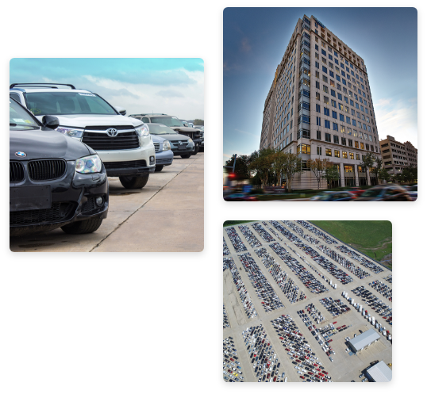
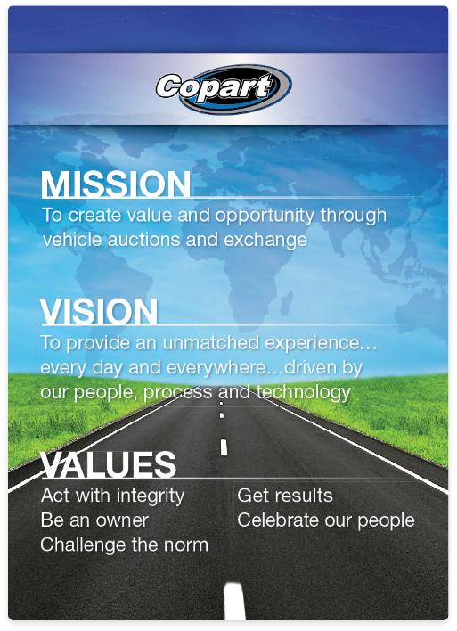
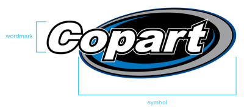
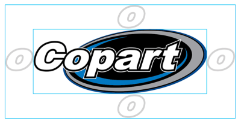
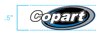

Brand
What is a Brand?
A brand is the set of perceptions, experiences, stories and expectations that lead people to choose one company over another. Our brand is who we are, and it is why our customers should choose Copart over the competition.
A brand is more than a logo. It is the voice we use to tell our story. It is the experience people have with Copart. Our brand identity is our company’s personality. It encompasses all the touch points and communication channels. It’s how the world recognizes and distinguishes Copart from the competition.
Why is Brand Important?
We all play a role in strengthening our brand. By incorporating these guidelines into the materials you create and the interactions you have, you help strengthen the Copart brand. The tools are flexible enough for you to create a full range of expression for your specific audience, while still allowing our shared strengths and aspirations to shine.
Our brand identity is cohesive, which helps establish a strong brand voice that resonates with the audience to build brand awareness. Over time, that awareness and consistency build trust and keep customers coming back year after year.
In This Guide
This brand style guide takes the heart and soul of the Copart brand - our mission, vision and values - and translates it into design. We define our brand and describe the signature design elements that set us apart in an increasingly competitive market.
Our brand guidelines are the tools we use to create our story, live up to our expectations and reinforce the experiences customers and non-customers have with Copart. This guide is the manual for looking, speaking and acting like Copart. Through consistent use across all teams and channels, these guidelines amplify the impact of our brand in an increasingly competitive industry.
Questions about this guide or how to properly use this guide can be sent to
Advertising@Copart.com.
About the Copart Brand
The Copart Brand Story
Founded in 1982 by Willis J. Johnson, Copart is a true American success story. Johnson grew up learning about business from his father, an entrepreneur who dabbled in everything from dairy farming to running restaurants and building houses. Johnson took that entrepreneurial spirit, along with a strong work ethic and a passion for change, and started Copart with just one salvage yard in California.
In 1994, he took Copart public (NASDAQ: “CPRT”), raising the money needed to expand the company across the United States and into the next millennium. With a strong focus on evolving and enhancing its auction technology, Copart has transformed from a salvage vehicle auction company into a technology company offering a global remarketing platform that links Buyers and Sellers around the world.
Today, Copart’s extensive inventory is housed on more than 8,000 acres of land and includes an array of vehicles to ensure Members can find what they’re looking for, from classics and exotics, early and late model cars and trucks, to industrial vehicles and more. Copart sells over two million vehicles each year, so there’s something for everyone.
Copart’s success has earned the company a place on the S&P 500 and recognition on Deloitte’s “The Exceptional 100 List of Top Performing U.S. Companies.” As the premier global online vehicle auction company, Copart puts the power to bid and win in your hands.
Elevator Speech: How to tell our brand story, clearly and concisely.
Copart is an online vehicle auction platform that was founded in 1982 with a single salvage yard. Today, Copart is a publicly traded company and a global leader in its industry, with more than 200 locations across 11 countries and over 125,000 vehicles up for auction every day. With a strong focus on evolving and enhancing its auction technology, Copart has transformed from a salvage vehicle auction company into a technology company offering a global remarketing platform that links Buyers and Sellers around the world.
Copart Facts
Copart was founded in 1982, with its first location in Vallejo, California.
Copart has been a publicly traded company since 1994 (NASDAQ: “CPRT”).
Copart expanded to 100 locations by 2002.
Copart opened its first international yard in Canada in 2003.
Copart launched its public website in 2008.
Copart sells more than two million vehicles each year.
Copart provides suppliers with remarketing services that expose their products to more than 80,000 Buyers in over 150 countries.
Copart has over 200 locations in the U.S., Canada, the United Kingdom and Ireland, the United Arab Emirates, Brazil, Spain, Germany and Finland.
Copart was named a Top Company on Deloitte’s “The Exceptional 100” list in 2015 and earned a place in the S&P 500 in 2018.
Logo and Usage
The Copart Logo
As the most recognizable brand asset, the logo is our primary brand identifier, and it must appear consistently and in every Copart communication, printed or digital. It is a key brand asset and must be respected whenever it is used.
Consisting of the Copart wordmark and the ellipsis symbol, the logo is a unique piece of artwork that has been designed specifically to symbolize Copart.
Never, under any circumstances, should the logo artwork be altered or re-created. Only use the approved files when reproducing and applying the Copart logo.
Email Advertising@Copart.com to obtain the correct logo files. In your request, include the logo color (full color or black and white), file type required and intended application (digital, paper print, stitching, video, etc.).
Clear Space and Minimum Size
The Copart logo should always be surrounded by a generous field of clear space to ensure its legibility and impact. This isolates the logo and protects it from competing with visual elements such as text and supporting graphics.
As shown below, the absolute minimum amount of clear space that can surround the logo in any application is equal to the size of the “o” in the Copart wordmark.
The Copart logo can be scaled to a variety of sizes. However, to ensure the logo is always legible, it should never be reproduced smaller than .5” in height.
 Logo Color Variations
To accommodate a range of reproduction and printing requirements, two logo color variations are available for use.
Keep in mind that the full-color logo is always preferred for brand communications. However, the one-color black version should be used when color reproduction is limited. This variation is especially effective in media such as newsprint.
Background Control
The Copart logo should be highly legible in every application. As shown below, the logo and its variations can be positioned against a variety of backgrounds.
The full-color logo features well against white and black, as well as photographic backgrounds that provide significant contrast. The one-color variation also displays well against white and black and should be used in single-color print publications.
Logo Misuse
Any misuse of the logo artwork diminishes its integrity and that of the Copart brand as a whole.
The examples featured here represent some common misuses that must be avoided whenever working with the logo.
Remember that the Copart logo must never, under any circumstances, be altered or re-created in any way.
Primary Color Palette
Color plays an active role in people’s lives. It attracts attention and triggers emotions. Color can influence decisions and behaviors.
Consistent use of color supports visual cohesion across our communications and leverages emotional resonance with our brand. When combined with brand-specific imagery and content, color enhances the depth and impact of our story.
The colors of the palette shown below are inspired by those found in the Copart logo. Using these colors consistently across communications and various media builds recognition for the Copart brand while contributing to a unified look and feel.
The colors of the primary palette can be used for text, color fields and backgrounds.
Under no circumstance should the color red be used in any context with the Copart brand, unless identifying another brand such as CrashedToys or National Powersport Auctions (NPA).
PMS
The Pantone® Matching System is a system of thousands of numbered swatches. Most corporate colors, in a logo for example, are identified with a number from this system.
CYMK
This color model is used for print and is also referred to as process color. It is used to describe the printing process itself. CMYK uses four colors (cyan, magenta, yellow and black) to produce an array of colors.
RGB
This color model is used for digital and web-based color palettes, and it consists of red, green and blue. RGB is the most widely used color system.
HEX
A hex value is an extension of the RGB color model and is used on web pages to specify colors.
Typography
Consistent use of typography is a simple way to align our visual identity. Fonts set a cadence for how a communication is read and can do a lot to alleviate denseness on the most text-heavy pages. The consistent use of the selected typeface families throughout Copart applications adds greatly to a cohesive visual style.
The Helvetica Neue font family is a highly legible sans serif made up of 51 fonts, which includes nine weights in three widths. This font family was chosen for its clean lines, availability across most programs, compatibility with the Copart logo and high degree of legibility in all applications.
Because of this font’s variety of weights and styles, Helvetica Neue can be used for headlines, titles and primary messaging.
Email Signature
Because email is one of our most common and most visible forms of daily communication, it is imperative we maintain clear, consistent email identification to strengthen the Copart brand.
To ensure this consistent image, email signatures in Outlook are automatically generated to meet the brand standards below.
Refrain from editing the pre-populated signature. Additions such as inspirational quotes, other images and QR codes are not permitted.
If the information or image on your signature is incorrect, email Advertising@Copart.com for assistance.
Best Practices
Email Best Practices
All Copart employees must use a simple, standard font (preferred: Helvetica Neue or Arial) no larger than 12 pt in all emails. Non-standard typefaces and HTML may not translate across email clients.
Images and Logos: Do not use any logos or images within the email signature, other than those automatically generated within Outlook.
Quotes: Refraining from the use of quotes or sayings is best practice for professional communications; it is important to avoid the potential confusion of external audiences assuming a particular statement represents Copart’s official slogan, ideology or brand promise.
Location Best Practices
Each Copart location should have printed templates for various situations. Example: yard closures, special events, notices, etc. available at MyCopart.com > Marketing > Yard Marketing Tookit.
Each location should have appropriate approved marketing posters and signage. For questions about the current correct in-location merchandising, contact Advertising@Copart.com.
Each location should have printed Copart collateral available at all times.
For reorders of these materials or general questions, email Advertising@Copart.com.
General Best Practices
Capitalize the C in Copart.com.
Do not use “A Bid above the Rest.”
Reach out to Marketing for banner or signage requests (excluding external building signage).
Always use a Copart-approved PowerPoint template when creating presentations available on MyCopart.com > Brand Guidelines, Logos and More.
Review the full Copy Style Guide at MyCopart.com > Brand Guidelines, Logos and More.